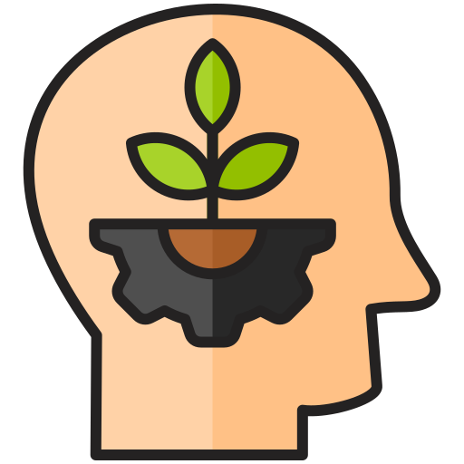
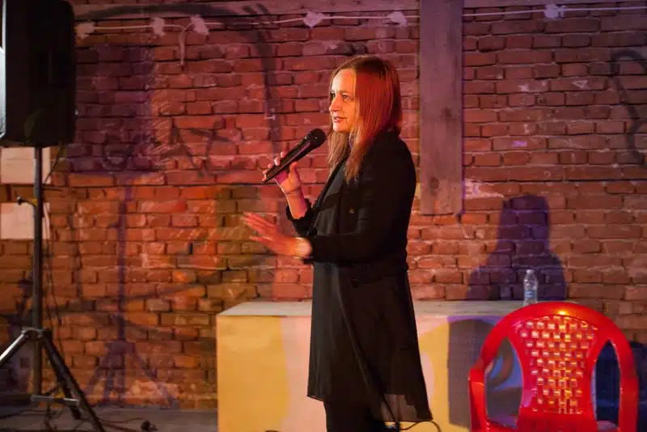

Нашата история
Театрална школа „Артистисимо“ възниква като творческо пространство към читалищната дейност в Русе, с цел да обедини млади хора с интерес към сценичните изкуства. Създадена и ръководена от Иглика Пеева, школата постепенно се утвърждава като място за развитие на артистични умения, въображение и сценично присъствие. През годините „Артистисимо“ се развива като активен участник в културния живот на града, с множество участия в фестивали, театрални постановки и творчески проекти. Част от възпитаниците на школата продължават развитието си в сферата на актьорското майсторство и сценичните изкуства както в България, така и в чужбина.

Мисия
Мисията на театрална школа „Артистисимо“ е да развива творческия потенциал, увереността и сценичното присъствие на деца, ученици и млади хора чрез театрално обучение, практически занимания и участие в реални сценични проекти.

Визия
„Артистисимо“ се стреми да бъде утвърдена млада сцена в Русе, която вдъхновява ново поколение артисти, развива културната среда и предоставя възможности за изява както на начинаещи, така и на напреднали участници.
Ценност

Творчество
Насърчаваме свободното изразяване и развиваме индивидуалния артистичен стил на всеки участник.

Увереност
Помагаме на младите хора да преодолеят притеснението и да изградят увереност в себе си както на сцената, така и в ежедневието.

Работа в екип
Театърът е колективно изкуство – учим участниците да работят заедно, да се подкрепят и да изграждат доверие.
Култура и изкуство
Възпитаваме уважение към театралното изкуство и културните ценности.

Личностно развитие
Театърът е средство за израстване – както артистично, така и личностно.
Сценично присъствие
Развиваме умения за изразяване, комуникация и въздействие пред публика.
Нашият екип
Иглика Пеева
Ръководител
Иглика Пеева е родена в Русе през 1956г. Завършва Руската езикова гимназия през 1974г.и Международен туризъм – Варна. Още в ученическите години печели конкурси за художествено слово, литературни конкурси и конкурси за рисунки, както и шампионски титли по тенис на корт и водолазен спорт. Работила е като актриса, библиотекар, редактор н списание „Седем дни в Русе”. Журналист е в Радио Русе от 1985г. Автор е на 14 книги, 12 пиеси за театър. Член на Съюза на писателите в България и на Славянската артистична и литературна академия. Преседател на Дружеството на писателите в Русе. Създател и ръководител на Театър-школа „Артистисимо”.
